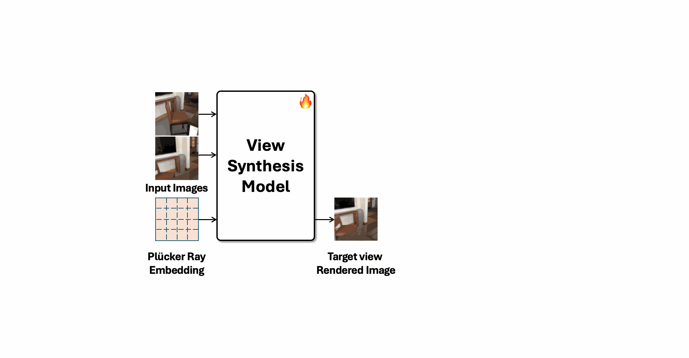
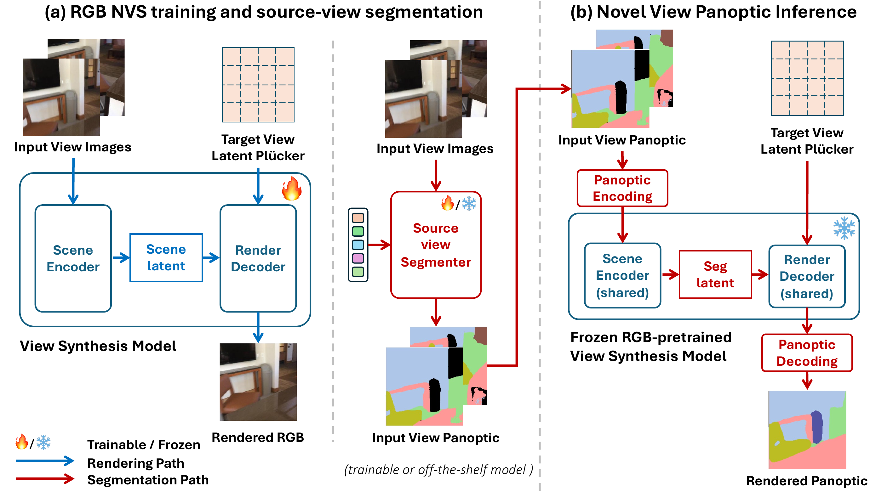
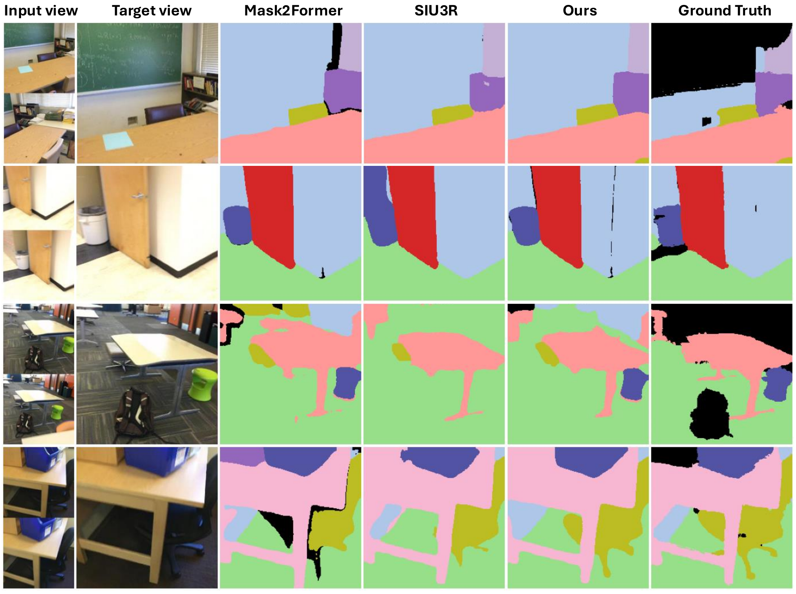
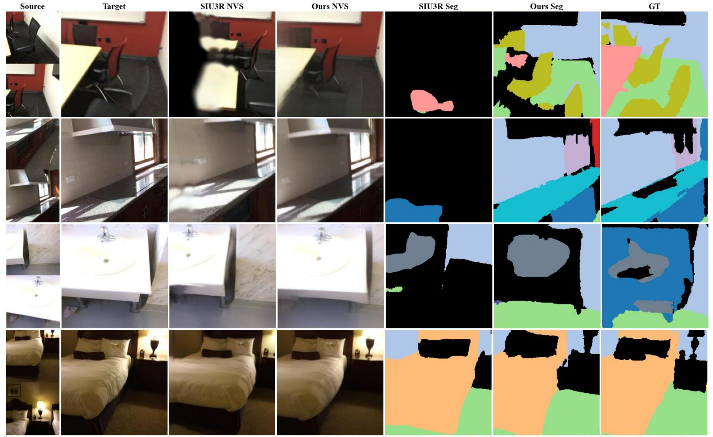
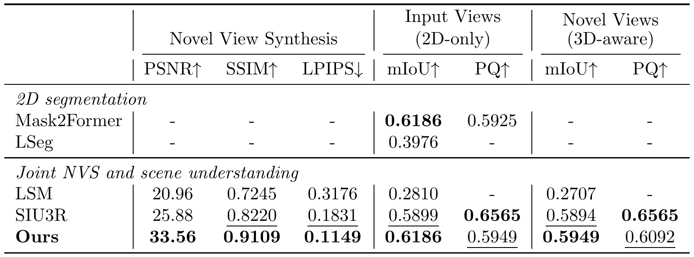
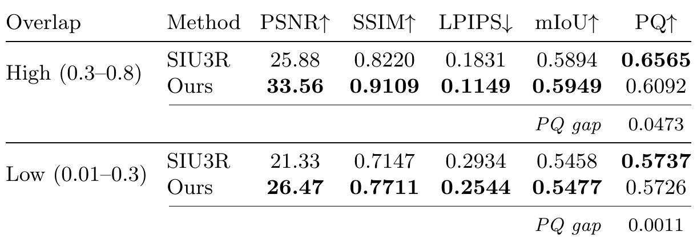
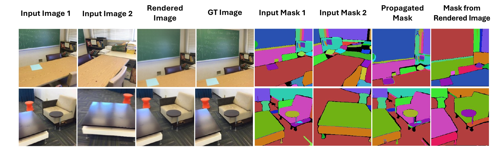
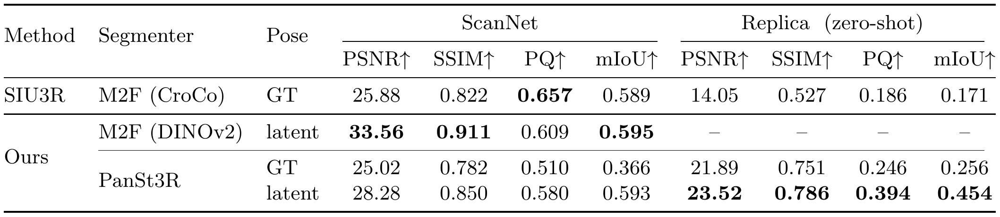

LVSM as a Signal Renderer
We show that a large view synthesis model can render view-independent non-RGB signals, not only RGB appearance.
ECCV 2026
TL;DR: Large view synthesis models can act as renderers for panoptic signals,
propagating labels to novel viewpoints without explicit 3D reconstruction.
Large view synthesis models synthesize novel views through cross-view attention without explicit 3D representations, and recent studies have shown that they learn accurate spatial correspondence from RGB supervision alone. We observe that this correspondence generalizes beyond appearance.

We present the first work to extend large view synthesis models beyond appearance rendering to 3D scene understanding. Given panoptic labels on the input views, we encode them into binary channel representations and pass them through the same model to render target-view segmentation.
We show that a large view synthesis model can render view-independent non-RGB signals, not only RGB appearance.
We propagate panoptic labels to novel views without NeRF, 3D Gaussians, or segmentation-specific training of the renderer.
We decouple source-view segmentation from target-view propagation, allowing different segmenters to supply the input labels.
Our method operates in two parallel paths through the same large view synthesis model. Given unposed input views, the rendering path synthesizes the target-view image, while the segmentation path encodes the panoptic labels as binary channel encodings and passes them through the same novel view synthesis model to produce target-view segmentation.

Panoptic propagation preserves rendering quality while achieving competitive segmentation with a frozen novel view synthesis model. Under sparse geometric overlap, the frozen NVS transformer retains a learned extrapolation capability.




Our decoupled design lets us replace the source-view segmenter with an off-the-shelf predictor without retraining the rest of the system. The propagation stage can take labels from different source-view segmenters without retraining.


TBDThis work was supported by IITP grants RS-2021-II211343, RS-2025-25442338, and RS-2026-25517417. POSCO DX Company, Ltd. provided generous support for this research.